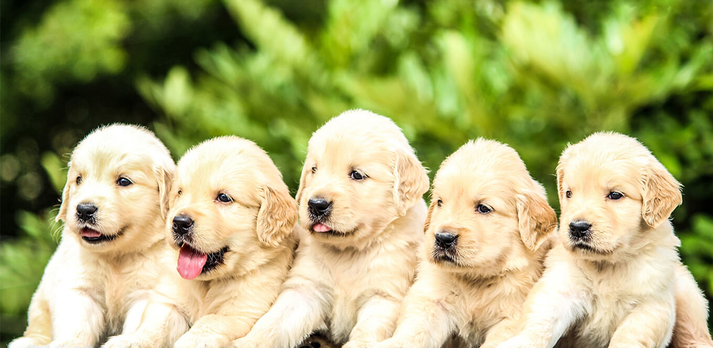

Welcome to our Dogs Breeds blog
A dog breed is a particular strain or dog type that was purposefully bred by humans to perform specific tasks, such as herding, hunting, and guarding. When distinguishing breed from type, the rule of thumb is that a breed always "breeds true". Dogs are the most variable mammal on earth, with artificial selection producing around 450 globally recognized dog breeds. These breeds possess distinct traits related to morphology, which include body size, skull shape, tail phenotype, fur type, and coat colour. Their behavioural traits include guarding, herding, and hunting, and personality traits such as hypersocial behavior, boldness, and aggression. Most breeds were derived from small numbers of founders within the last 200 years. As a result, today dogs are the most abundant carnivore species and are dispersed around the world.